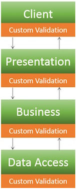

Introduction
This article is focused on providing clear, simple, actionable guidance for providing Java Bean Validation security functionality in your applications.
Bean validation (JSR303 aka Bean Validation 1.0 /JSR349 aka Bean Validation 1.1) is one of the most common ways to perform input validation in Java. It is an application layer agnostic validation spec which provides the developer with the means to define a set of validation constraints on a domain model and then perform validation of those constraints through out the various application tiers.
One advantage of this approach is that the validation constraints and the corresponding validators are only written once, thus reducing duplication of effort and ensuring uniformity:
Typical Validation:

Bean Validation: